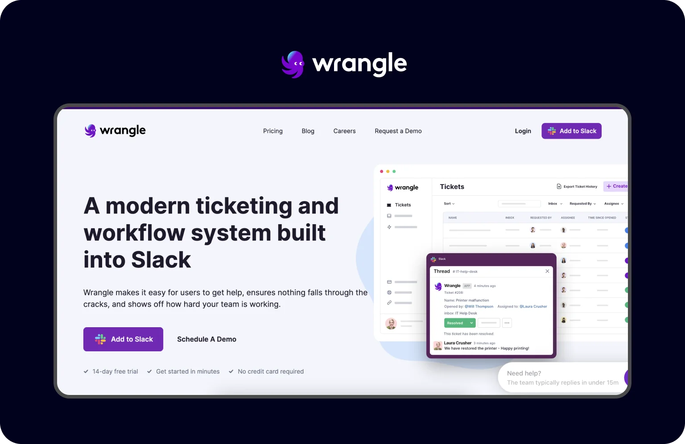
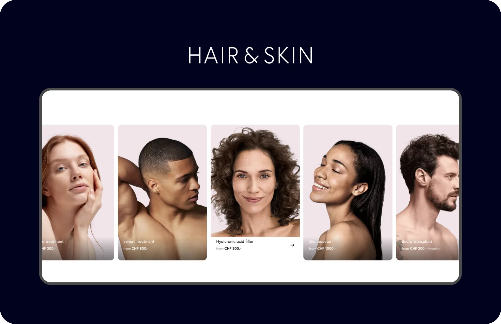
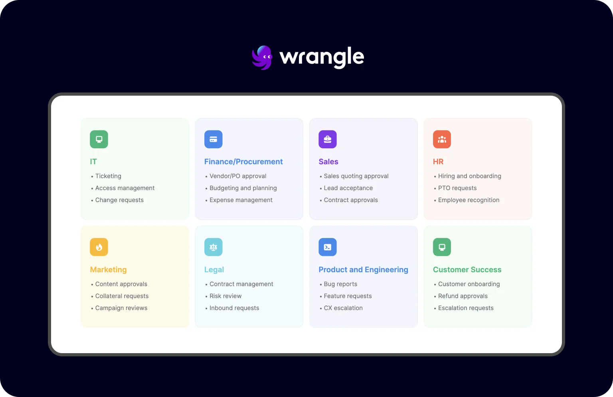
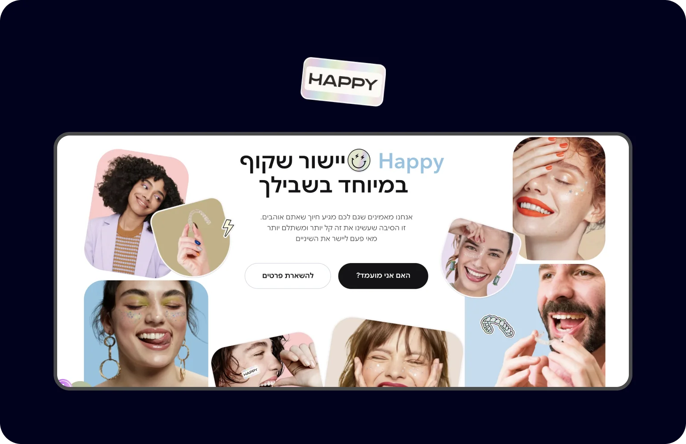

19 vital parts for your website page to maximize user engagement
Chances are, there’s been a time when you’ve clicked through endless links, scrolling page after page in a seemingly futile quest for the right information. This journey often ended with you exiting the website as empty-handed as when you started, right? To avoid falling into this trap, knowing the essential digital elements can completely transform your project’s digital presence.
Why do you need to think about page structure
Let’s start by defining what a webpage is, as it is not the same as a website. Simply put, it’s an individual page with specific URLs, different content, and unique images, where every element plays a crucial role in engaging the visitor. When talking about its structure, we’re addressing how all these pieces fit together to make something that’s good to look at and makes sense to use.
The organized webpage is the foundation of your online presence. It’s what guides your visitors through the content, like invisible signposts pointing to where they want to go. Without a well-thought-out structure, even the most visually stunning page can leave users lost and confused, resulting in a higher bounce rate and lower engagement.
1.Header
First up is the header or a site menu. Sitting right at the top, it is the primary thing anyone sees, no matter which page they land on. This element is strategically important, allowing users to jump from one page to the next without hindrance.

2. CTA button
Next on the list is the Call to Action (CTA) buttons that guide your visitors on what to do next, whether it’s “Buy Now,” “Learn More,” or “Sign Up.” Their main aim is to turn a passive user into an active one while improving conversions for a particular page.

3. Hero section
Moving on, let’s talk about the hero section. Typically found below the header, this element is your chance to make an impactful statement. That section usually combines an eye-catching image or video with a powerful message and is often complemented by a CTA button. Its purpose is to grab attention, deliver a key message, and set the tone for the rest of the site.

4. Footer
Scrolling down to the bottom of the page, you’ll find the footer. Of course, it might not be the first thing visitors see, but it plays a crucial role in wrapping up their experience on your site.

5. Slider
Up next is the slider. This element uses the technique of a slideshow or carousel and is the dynamic storyteller of your webpage that rotates a series of images, text, or videos across the screen. It showcases multiple pieces of content and thus saves space on your layout.

6. Search
Another useful component is a search function tucked away in the header or an easily accessible place. With this element, visitors have a quick way to find what they’re looking for. It simplifies browsing content within a website and displays relevant information based on the search query.
7. Menu and navigation
When we think about easy navigation across a webpage, the menu is the main element that comes to mind. This component guides visitors through the site to help them understand what you offer at a glance and how to get there.
There are various menu types to choose from, each serving different design needs and user experiences. The classic horizontal menu runs across the top of your page, offering straightforward access to major sections.

8. Breadcrumbs
Next in line is breadcrumbs. No, we’re not talking about the kind you find in the kitchen, but the digital steps that help guide visitors through your website. It is important to note that they don’t replace the primary menu we discussed earlier but instead present a second level of navigation and streamline the platform’s usability.

9. Forms
Whether it’s for signing up for a newsletter, making a purchase, or getting in touch, forms are the go-to method for visitors to interact and communicate with your site. They are essential to gather information, simplify transactions, or get feedback.

10. Cards
Move on to the next element — cards. Each section typically contains an image or icon, a brief description, and perhaps a call to action, all enclosed in a small, defined area. From products and blog posts to user profiles and more, cards organize a chunk of content types in a compact, visually appealing package.

11. Videos
Media materials are a big deal. When was the last time you scrolled past a video without at least a curious glance? They draw us in, keep us hooked, and sometimes, before we know it, we’ve learned something new or found a product we can’t live without.

12. Progress indicator
Have you ever filled out a form or completed a task online and wondered, “How much longer is this going to take?” That’s where a progress indicator comes in handy. This small but helpful element gives users a visual cue of where they are in the process and how much is left.

13. Favicon
There is another small yet mighty tool — favicon. That is a tiny icon in your browser tab next to a website’s name. It might seem insignificant, but it’s actually a little powerhouse in the world of web design that allows users to get a quick visual connection with your brand while they are browsing.

14. Tags
Another versatile element on your webpage is tags. They’re like those sticky notes you put on documents to remind you what’s what. On a website, they help categorize content, making it a breeze for users to find what they’re interested in. Say you’re running a blog.

15. Links
Links are your way of guiding visitors around your site and even beyond it. Whether it’s internal URLs that keep customers exploring your site or external ones that offer additional information, each is a helpful signpost.

16. Quality images
Let’s shine a spotlight on quality images. They speak volumes without saying a word, set the tone, evoke emotions, and connect with your audience on a deeper level. Such an essential element can showcase your products, share moments, and tell the brand’s story.

17. Typography
We’re close to the finish line, and the next element is typography. First up, font choice. This can be a fun playground but also a tricky field. Whenever you are sleek and modern or quirky and whimsical, select the best font that reflects your brand’s personality.

18. White space
Time to talk about white space, often the invisible element of great web design. And while it might seem like “empty” space, it’s anything but. It gives users a break, helps them process information, and guides them from one element to another.

19. Sidebar
Finally, a sidebar is a trusty sidekick to your website’s main content with extra information or functionality. It can house anything from navigation menus, social media links, and author bios to call-to-action buttons like share, search bars, and upcoming events. Typically, it sticks to the left or right side of a web page and presents a vertical list of options.

Final point
And there we have it — a comprehensive journey through the essential elements of a webpage, from top to bottom. We’ve explored how each component, including favicons, breadcrumbs, videos, cards, and many more, shapes an identity for a cohesive and user-friendly website. And most importantly, how to implement them correctly.
So, as you begin your web design journey, keep these elements in mind. Use them wisely, blend them creatively, and watch your website transform into a vibrant, living entity that connects with your audience and stands out in the digital world. If you’d like to leave this responsibility entirely to a design team, Halo Lab is happy to help. For more detailed information, contact us at any time!